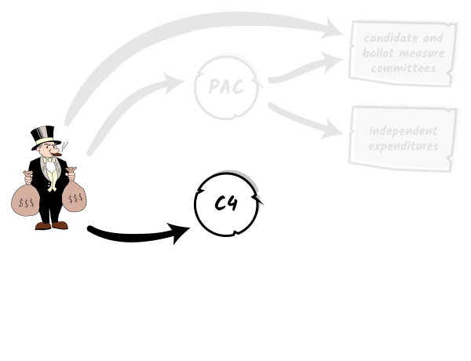
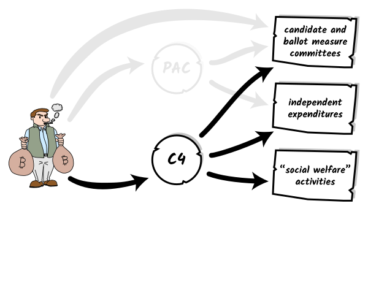
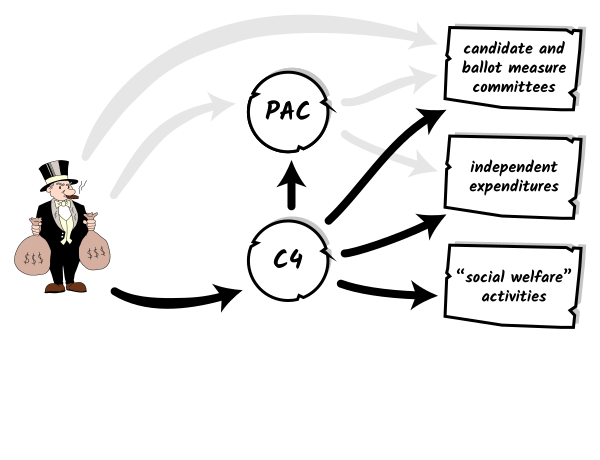
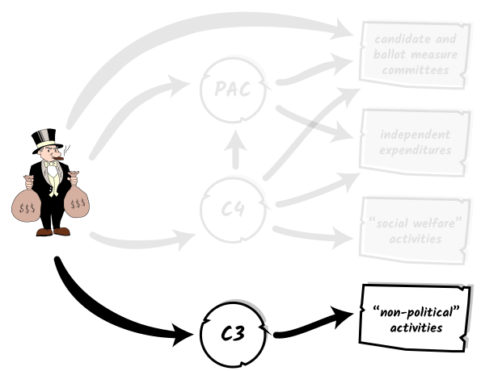
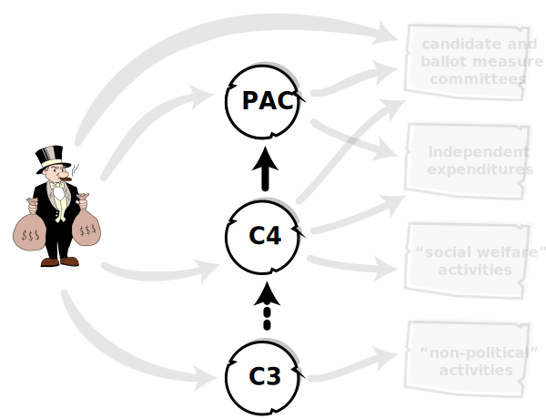
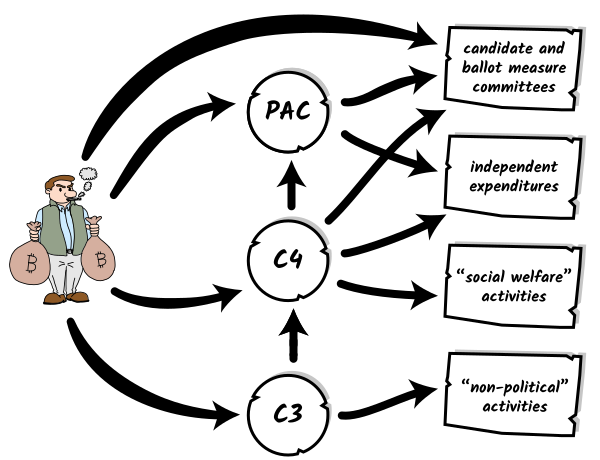
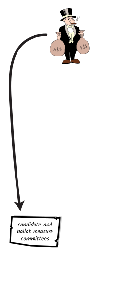
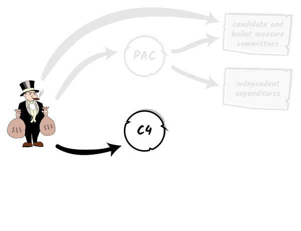
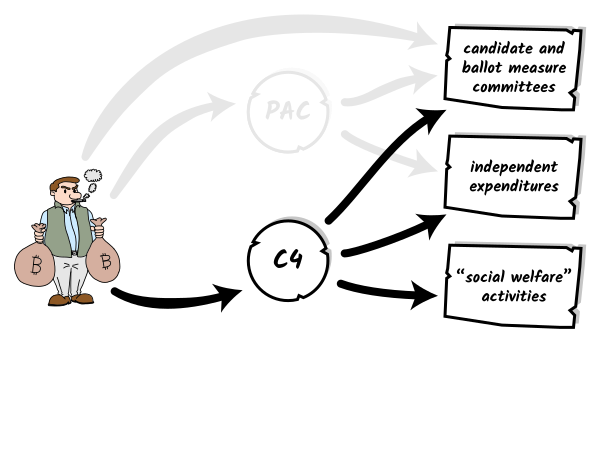
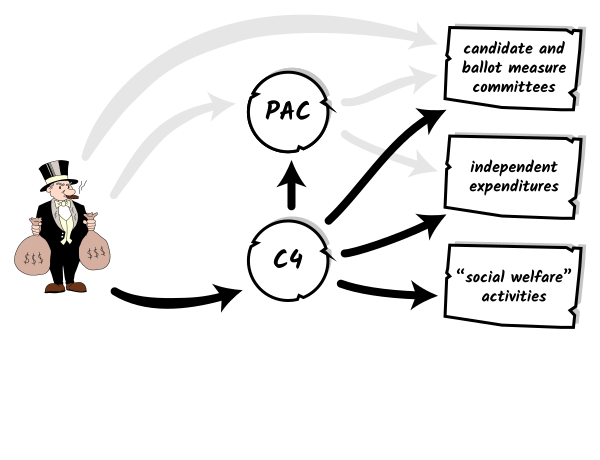
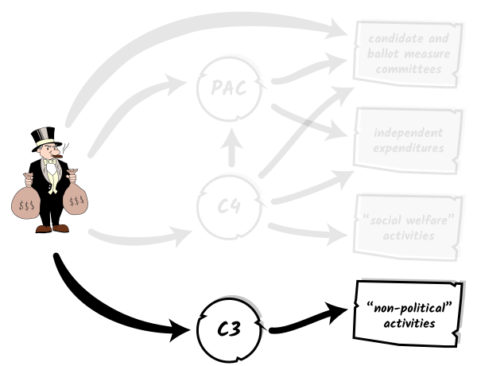
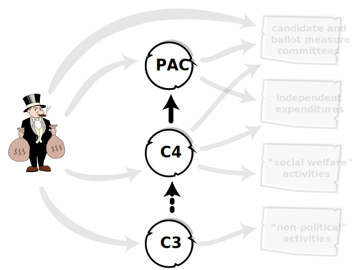
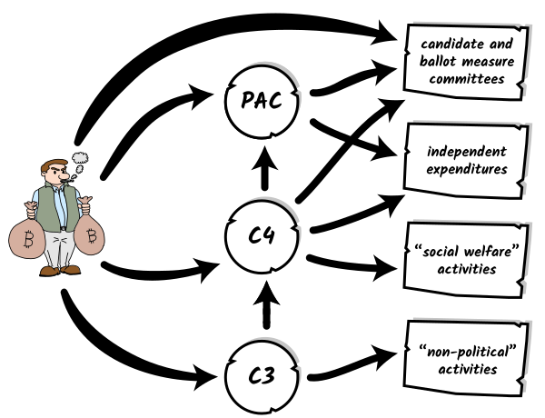
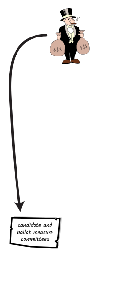
 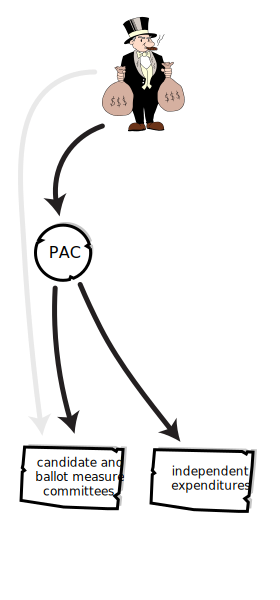
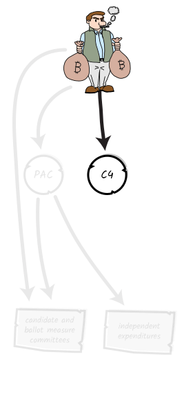
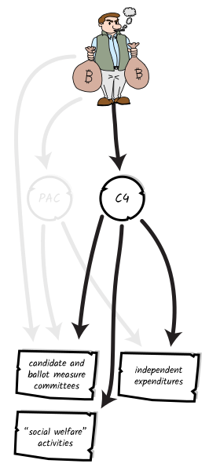
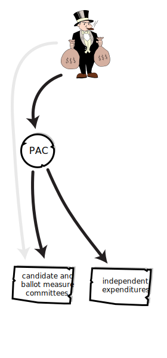
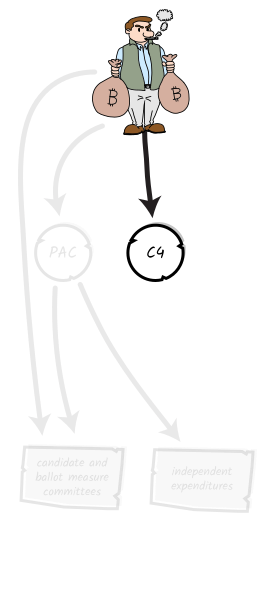
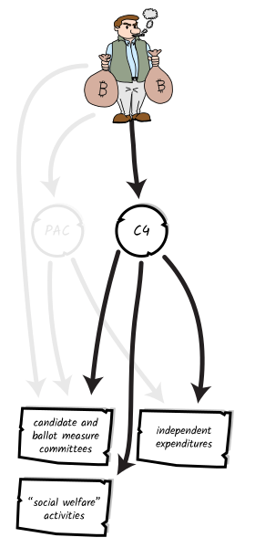
 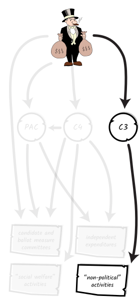
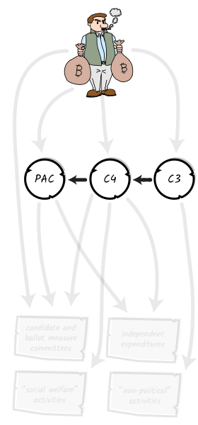
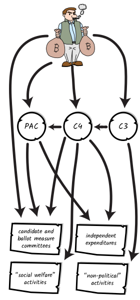
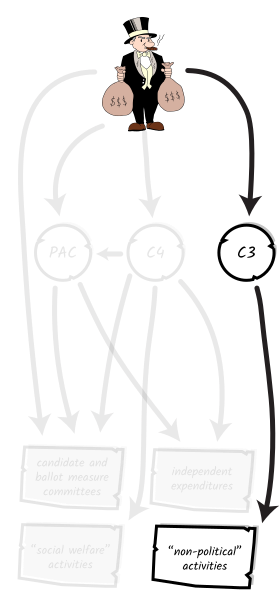
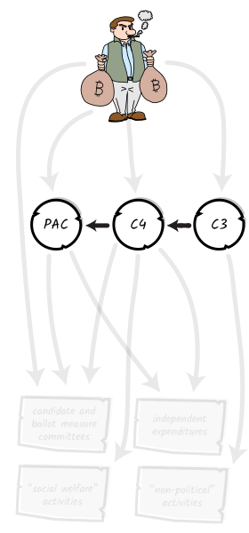
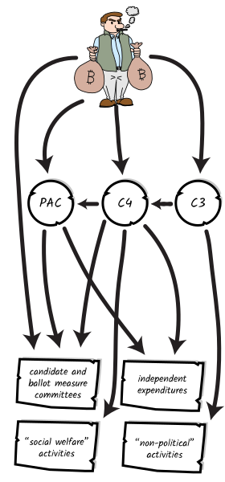
Let's say you are a San Franciscan with a few hundred thousand dollars to spare. Unhappy with the direction of the city, you have decided to use your cash to influence the result of the next election. What are your options?
The most straightforward place to start is with a contribution directly to a candidate or ballot measure.
There are some downsides to this approach. While there are no limits on giving to ballot measure campaigns, most candidate elections in the city have a $500 contribution limit. Second, your payment will be clearly and publicly disclosed.
You could instead give to a political action committee (PAC). PACs are organizations that pool contributions from various sources and then use that money to support or oppose candidates or ballot measures.
There are no contribution limits when giving to PACs. PACs are required to disclose their donors, so your name will still appear publicly – but one step removed from the candidate or measure you are supporting.
PACs can give to candidate committees, where they are bound by the same $500 limit as individuals. However, they can also make unlimited independent expenditures.
Independent expenditures are communications – like ads, mailers, and voter guides – that advocate for the election or defeat of a candidate or ballot measure, made without coordination with the candidate or measure’s campaign.
PACs can also give to other PACs, leading to a web of money flowing between organizations that can be hard to follow.
A third option is to give to a 501(c)(4) organization. These are nonprofits that can engage in political activity.
Their donor disclosures work a little differently. In San Francisco, any 501(c)(4) that spends more than $50,000 on political activity in a year must create a committee and disclose its sources of cash. However, it is only required to disclose its most recent donors, until the sum disclosed is equal to the sum it has spent on elections – known as the "last-in-first-out" rule.
For example: imagine that a 501(c)(4) gathers $1 million in donations from 10 donors, each giving $100,000. The 501(c)(4) then spends $500,000 on independent expenditures. It would be required to disclose only the names of the five most recent donors, to match the $500,000 spent.
The other five donors, who gave just as much to the 501(c)(4), would never be disclosed.
501(c)(4)s can only spend half of their money on direct contributions to elections or on independent expenditures.
The other half must be spent on “social welfare” activities. This can include community organizing, issue advocacy, and training potential candidates for office. So even if your money is not going directly to a candidate or measure, it can still be used to indirectly influence elections.
Donors whose money is spent on “social welfare” activities are never disclosed.
Many 501(c)(4)s work in tandem with a PAC or PACs. Although they are legally separate entities, they can share staff, office space, and other resources.
Yet another option is to give to a 501(c)(3). These are nonprofits that are not allowed to engage in political activity. They are not required to disclose their donors.
However, they can still engage in activites adjacent to the political sphere. In 2022, the 501(c)(3) Neighbors for a Better San Francisco gave large sums of money to multiple media orgs, for example, and paid Brooke Jenkins for “consulting services” while she campaigned on the Chesa Boudin recall.
Several groups in San Francisco are composed of a 501(c)(3), a 501(c)(4), and one or more PACs. This allows them to engage in a wide range of political activities while giving donors a variety of options for how to give – depending, in part, on how comfortable they are with public disclosure.
Giving to a 501(c)(3) is the most private option. Giving directly to a candidate or measure is the most public. Giving to a PAC or 501(c)(4) is somewhere in between.